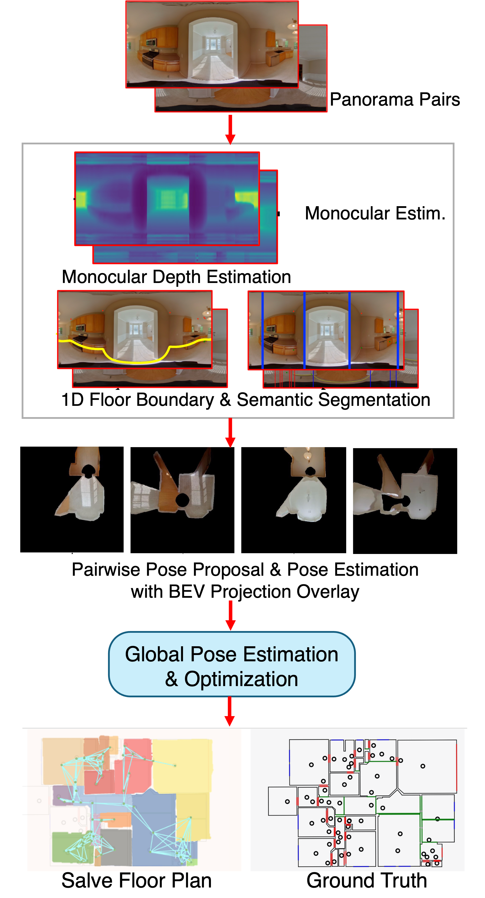

Yuguang Li
I'm a full-time researcher in GRAIL lab of University of Washington, working on my last chapter of PhD thesis. Concurrently, I'm a principal research scientist from Zillow Group. I've acquired my bachelor degree on opto-electrical engineering. Over the undergrad years, I built ray-tracing models for large vegetated scenes with CUDA, and had five publications in top-tier remote sensing journals. I've acquired two master degrees prior to joining Zillow on Geospatial Information & Remote Sensing and Electrical Computer Engineering. In recent years, I've been exploring resarch in the areas of computer vision, machine learning and computer graphcis, under the industrial environments. The research we produced had a strong focus on boosting automation and efficiency from indoor reconstruction, with a big focus on robustness and practicality. This leads to dozens of first-author patents and several top-tier papers. I was fortunate to drive Zillow's indoor reconstruction project from a small scientist team, and expanded the production pipeline to reconstruct hundreds of thousands of houses each year with high-degree of automation and an offshore QA team. I was featured in Zillow's article as a result of this work. We solve precise camera poses and precise indoor structure from unposed RGB panorama images with extreme low capture densities. Our iterations started off by exploring a graphics focus human-in-the-loop pipeline (ZInD), to single / few-image layout estimation (PSMNet), two-view coarse camera pose estimation (Salve / CovisPose) and full scale learned bundle adjustments from dozens of input panorama images (BADGR). I've decided to focus on academia and complete my PhD dessertation from University of Washington in 2024, while still contributing to Zillow. I'm fortunate to take advise from professor Linda Shapiro, Alex Colburn, Sing Bing Kang and Ranjay Krishna. My recent research focuses on solving precise multi-view geometry and camera poses. Particularly, we explored to constrain non-linear optimization process with the learned priors from generative models in an end-to-end trainable fashion to avoid conflicting gradients. I've also been exploring reconstructing high-fidelity 3D scenes for novel view synthesis from few shot image inputs, where visual details like highlights and shadows from light sources and materials are preserved.Academic Papers

BADGR: Bundle Adjustment Diffusion Conditioned by GRadients for Wide-Baseline Floor Plan Reconstruction
Conference on Computer Vision and Pattern Recognition (CVPR) 2025
Yuguang Li, Ivaylo Boyadzhiev, Zixuan Liu, Linda Shapiro, Alex Colburn.
[PDF] | [CODE] | [POSTER]
Abstract: Reconstructing precise camera poses and floor plan layouts from a set of wide-baseline RGB panoramas is a difficult and unsolved problem. We present BADGR, a novel diffusion model which performs both reconstruction and bundle adjustment (BA) optimization tasks, to refine camera poses and layouts from a given coarse state using 1D floor boundary information from dozens of images of varying input densities. Unlike a guided diffusion model, BADGR is conditioned on dense per-feature outputs from a single-step Levenberg Marquardt (LM) optimizer and is trained to predict camera and wall positions while minimizing reprojection errors for view-consistency. The objective of layout generation from denoising diffusion process complements BA optimization by providing additional learned layout-structural constraints on top of the co-visible features across images. These constraints help BADGR to make plausible guesses on spatial relations which help constrain pose graph, such as wall adjacency, collinearity, and learn to mitigate errors from dense boundary observations with global contexts. BADGR trains exclusively on 2D floor plans, simplifying data acquisition, enabling robust augmentation, and supporting variety of input densities. Our experiments and analysis validate our method, which significantly outperforms the state-of-the-art pose and floor plan layouts reconstruction with different input densities. ... See More
Conference on Computer Vision and Pattern Recognition (CVPR) 2025
Yuguang Li, Ivaylo Boyadzhiev, Zixuan Liu, Linda Shapiro, Alex Colburn.
[PDF] | [CODE] | [POSTER]
Abstract: Reconstructing precise camera poses and floor plan layouts from a set of wide-baseline RGB panoramas is a difficult and unsolved problem. We present BADGR, a novel diffusion model which performs both reconstruction and bundle adjustment (BA) optimization tasks, to refine camera poses and layouts from a given coarse state using 1D floor boundary information from dozens of images of varying input densities. Unlike a guided diffusion model, BADGR is conditioned on dense per-feature outputs from a single-step Levenberg Marquardt (LM) optimizer and is trained to predict camera and wall positions while minimizing reprojection errors for view-consistency. The objective of layout generation from denoising diffusion process complements BA optimization by providing additional learned layout-structural constraints on top of the co-visible features across images. These constraints help BADGR to make plausible guesses on spatial relations which help constrain pose graph, such as wall adjacency, collinearity, and learn to mitigate errors from dense boundary observations with global contexts. BADGR trains exclusively on 2D floor plans, simplifying data acquisition, enabling robust augmentation, and supporting variety of input densities. Our experiments and analysis validate our method, which significantly outperforms the state-of-the-art pose and floor plan layouts reconstruction with different input densities. ... See More

CoVisPose: Co-Visibility Pose Transformer for Wide-Baseline Relative Pose Estimation in 360 Indoor Panoramas
European Conference on Computer Vision ECCV 2022
Will Hutchcroft, Yuguang Li, Ivaylo Boyadzhiev, Zhiqiang Wan, Haiyan Wang, Sing Bing Kang.
[Main Paper] [Supplementary] | [Code]
Abstract: We present CoVisPose,an end-to-end supervised learning method for relative camera pose estimation in wide baseline 360 indoor panoramas. To address the challenges of occlusion, perspective changes, and textureless or repetitive regions, we generate rich representations for direct pose regression by jointly learning dense bidirectional visual overlap, correspondence, and layout geometry. We estimate three image column-wise quantities: co-visibility (the probability that a given column’s image content is seen in the other panorama), angular correspondence (angular matching of columns across panoramas), and floor layout (the vertical floor-wall boundary angle). We learn these dense outputs by applying a transformer over the image-column feature sequences, which cover the full 360 field-of-view (FoV) from both panoramas.The result an rich representation supports learning robust relative poses with an efficient 1D convolutional decoder. In addition to learned direct pose regression with scale,our network also supports pose estimation through a RANSAC- based rigid registration of the predicted corresponding layout boundary points. Our method is robust to extremely wide baselines with very low visual overlap, as well as significant occlusions. We improve upon the SOTA by a large margin, as demonstrated on a large-scale dataset of real homes, ZInD. ... See More
European Conference on Computer Vision ECCV 2022
Will Hutchcroft, Yuguang Li, Ivaylo Boyadzhiev, Zhiqiang Wan, Haiyan Wang, Sing Bing Kang.
[Main Paper] [Supplementary] | [Code]
Abstract: We present CoVisPose,an end-to-end supervised learning method for relative camera pose estimation in wide baseline 360 indoor panoramas. To address the challenges of occlusion, perspective changes, and textureless or repetitive regions, we generate rich representations for direct pose regression by jointly learning dense bidirectional visual overlap, correspondence, and layout geometry. We estimate three image column-wise quantities: co-visibility (the probability that a given column’s image content is seen in the other panorama), angular correspondence (angular matching of columns across panoramas), and floor layout (the vertical floor-wall boundary angle). We learn these dense outputs by applying a transformer over the image-column feature sequences, which cover the full 360 field-of-view (FoV) from both panoramas.The result an rich representation supports learning robust relative poses with an efficient 1D convolutional decoder. In addition to learned direct pose regression with scale,our network also supports pose estimation through a RANSAC- based rigid registration of the predicted corresponding layout boundary points. Our method is robust to extremely wide baselines with very low visual overlap, as well as significant occlusions. We improve upon the SOTA by a large margin, as demonstrated on a large-scale dataset of real homes, ZInD. ... See More

SALVe: Semantic Alignment Verification for Floorplan Reconstruction from Sparse Panoramas
European Conference on Computer Vision ECCV 2022
John Lambert, Yuguang Li, Ivaylo Boyadzhiev, Lambert Wixson, Manjunath Narayana, Will Hutchcroft, James Hays, Frank Dellaert, Sing Bing Kang.
[Main Paper] [Supplementary] |[Code]
Abstract: We propose a new system for automatic 2D floorplan reconstruction that is enabled by SALVe, our novel pairwise learned alignment verifier. The inputs to our system are sparsely located 360 panoramas, whose semantic features (windows, doors, and openings) are inferred and used to hypothesize pairwise room adjacency or overlap. SALVe initializes a pose graph, which is subsequently optimized using GTSAM. Once the room poses are computed, room layouts are inferred using HorizonNet, and the floorplan is constructed by stitching the most confident layout boundaries. We validate our system qualitatively and quantitatively as well as through ablation studies, showing that it outperforms state-of-the-art SfM systems in completeness by over 200%, without sacrific- ing accuracy. Our results point to the significance of our work: poses of 81% of panoramas are localized in the first 2 connected components (CCs), and 89% in the first 3 CCs.
European Conference on Computer Vision ECCV 2022
John Lambert, Yuguang Li, Ivaylo Boyadzhiev, Lambert Wixson, Manjunath Narayana, Will Hutchcroft, James Hays, Frank Dellaert, Sing Bing Kang.
[Main Paper] [Supplementary] |[Code]
Abstract: We propose a new system for automatic 2D floorplan reconstruction that is enabled by SALVe, our novel pairwise learned alignment verifier. The inputs to our system are sparsely located 360 panoramas, whose semantic features (windows, doors, and openings) are inferred and used to hypothesize pairwise room adjacency or overlap. SALVe initializes a pose graph, which is subsequently optimized using GTSAM. Once the room poses are computed, room layouts are inferred using HorizonNet, and the floorplan is constructed by stitching the most confident layout boundaries. We validate our system qualitatively and quantitatively as well as through ablation studies, showing that it outperforms state-of-the-art SfM systems in completeness by over 200%, without sacrific- ing accuracy. Our results point to the significance of our work: poses of 81% of panoramas are localized in the first 2 connected components (CCs), and 89% in the first 3 CCs.

PSMNet: Position-aware Stereo Merging Network for Room Layout Estimation
Conference on Computer Vision and Pattern Recognition (CVPR) 2022
Haiyan Wang, Yuguang Li, Will Hutchcroft, Zhiqiang Wan, Ivaylo Boyadzhiev, Yingli Tian, Sing Bing Kang.
[Paper] [Code]
Abstract: In this paper, we propose a new deep learning-based method for estimating room layout given a pair of 360 panoramas. Our system, called Position-aware Stereo Merging Network or PSMNet, is an end-to-end joint layout-pose estimator. PSMNet consists of a Stereo Pano Pose (SP2) transformer and a novel Cross-Perspective Projection (CP2) layer. The stereo-view SP2 transformer is used to implicitly infer correspondences between views, and can handle noisy poses. The pose-aware CP2 layer is designed to render features from the adjacent view to the anchor (reference) view, in order to perform view fusion and estimate the visible layout. Our experiments and analysis validate our method, which significantly outperforms the state-of-the-art layout estimators, especially for large and complex room spaces.
Conference on Computer Vision and Pattern Recognition (CVPR) 2022
Haiyan Wang, Yuguang Li, Will Hutchcroft, Zhiqiang Wan, Ivaylo Boyadzhiev, Yingli Tian, Sing Bing Kang.
[Paper] [Code]
Abstract: In this paper, we propose a new deep learning-based method for estimating room layout given a pair of 360 panoramas. Our system, called Position-aware Stereo Merging Network or PSMNet, is an end-to-end joint layout-pose estimator. PSMNet consists of a Stereo Pano Pose (SP2) transformer and a novel Cross-Perspective Projection (CP2) layer. The stereo-view SP2 transformer is used to implicitly infer correspondences between views, and can handle noisy poses. The pose-aware CP2 layer is designed to render features from the adjacent view to the anchor (reference) view, in order to perform view fusion and estimate the visible layout. Our experiments and analysis validate our method, which significantly outperforms the state-of-the-art layout estimators, especially for large and complex room spaces.

Zillow Indoor Dataset: Annotated Floor Plans With 360 Panoramas and 3D Room Layouts
Conference on Computer Vision and Pattern Recognition (CVPR) 2021
Steve Cruz, Will Hutchcroft, Yuguang Li, Naji Khosravan, Ivaylo Boyadzhiev, Sing Bing Kang.
[PDF] | [CODE] | [ARTICLE]
Abstract: We present Zillow Indoor Dataset (ZInD): A large indoor dataset with 71,474 panoramas from 1,524 real unfurnished homes. ZInD provides annotations of 3D room layouts, 2D and 3D floor plans, panorama location in the floor plan, and locations of windows and doors. The ground truth construction took over 1,500 hours of annotation work. To the best of our knowledge, ZInD is the largest real dataset with layout annotations. A unique property is the room layout data, which follows a real world distribution (cuboid, more general Manhattan, and non-Manhattan layouts) as opposed to the mostly cuboid or Manhattan layouts in current publicly available datasets. Also, the scale and annotations provided are valuable for effective research related to room layout and floor plan analysis. To demonstrate ZInD’s benefits, we benchmark on room layout estimation from single panoramas and multi-view registration.
Conference on Computer Vision and Pattern Recognition (CVPR) 2021
Steve Cruz, Will Hutchcroft, Yuguang Li, Naji Khosravan, Ivaylo Boyadzhiev, Sing Bing Kang.
[PDF] | [CODE] | [ARTICLE]
Abstract: We present Zillow Indoor Dataset (ZInD): A large indoor dataset with 71,474 panoramas from 1,524 real unfurnished homes. ZInD provides annotations of 3D room layouts, 2D and 3D floor plans, panorama location in the floor plan, and locations of windows and doors. The ground truth construction took over 1,500 hours of annotation work. To the best of our knowledge, ZInD is the largest real dataset with layout annotations. A unique property is the room layout data, which follows a real world distribution (cuboid, more general Manhattan, and non-Manhattan layouts) as opposed to the mostly cuboid or Manhattan layouts in current publicly available datasets. Also, the scale and annotations provided are valuable for effective research related to room layout and floor plan analysis. To demonstrate ZInD’s benefits, we benchmark on room layout estimation from single panoramas and multi-view registration.
A linearly approximated iterative Gaussian decomposition method for waveform LiDAR processing
ISPRS Journal of Photogrammetry and Remote Sensing (2017)
Yuguang Li, Giorgos Mountrakis.
[PDF]
Short Description: Full-waveform LiDAR (FWL) decomposition results often act as the basis for key LiDAR-derived products. We propose LAIGD, which follows a multi-step "slow-and-steady” iterative structure, where new Gaussian nodes are quickly discovered and adjusted using a linear fitting technique before they are forwarded for a non-linear optimization. Two experiments were conducted along with another using synthetic data. LVIS data revealed considerable improvements in RMSE (44.8% lower), RSE (56.3% lower) and rRMSE (74.3% lower) values compared to the benchmark. These results were further confirmed with the synthetic data. Furthermore, the proposed multi-step method reduces execution times in half.
ISPRS Journal of Photogrammetry and Remote Sensing (2017)
Yuguang Li, Giorgos Mountrakis.
[PDF]
Short Description: Full-waveform LiDAR (FWL) decomposition results often act as the basis for key LiDAR-derived products. We propose LAIGD, which follows a multi-step "slow-and-steady” iterative structure, where new Gaussian nodes are quickly discovered and adjusted using a linear fitting technique before they are forwarded for a non-linear optimization. Two experiments were conducted along with another using synthetic data. LVIS data revealed considerable improvements in RMSE (44.8% lower), RSE (56.3% lower) and rRMSE (74.3% lower) values compared to the benchmark. These results were further confirmed with the synthetic data. Furthermore, the proposed multi-step method reduces execution times in half.